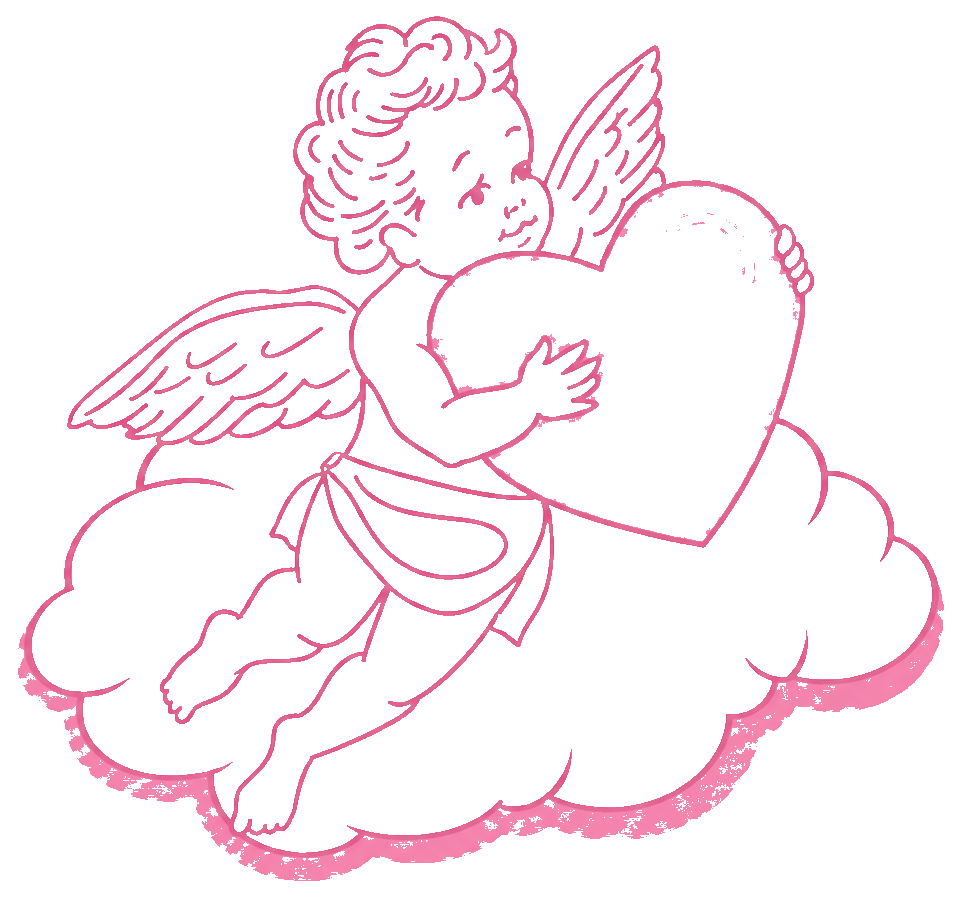

2人をくっつける
キーホルダー型の相性診断ゲーム
プレイ人数
2人〜
プレイ時間
1分〜
対象年齢
6歳〜
ゲームをはじめる
遊び方を見る
←
ゲーム中
？
質問数（最大5回）
1
2
3
4
5
「天の声をきく」を押して表示するか、
自分たちで自由に質問してみよう！
👼 天の声をきく
📋 一覧
🔄 別の質問にする
次の質問へ →
📜 これまでの質問
ゲームを終わる
🎊
どうだった？
指先はどこで止まったかな？
3つの結果から確認してみよう！
💗💗
相性ばっちり！
中央のハートマークでぴったり重なった
✋🤝
相性はまずまず！
それ以外の場所で指が触れ合った
😅
相性はイマイチ…
指が触れ合わなかった
もう一度プレイ
トップに戻る
←
遊び方
「好キーホルダー」は、2人をくっつける
キーホルダー型の相性診断ゲーム。
2人の「好き」や「価値観」を言い当てて、
指先がぴったり重なり合えば大成功！
💘 キューピッド
3人以上
💑 2人プレイ
2人
①
相性を確かめ合いたいプレイヤーを2人選び、2人の間に好キーホルダーを置きます。
②
プレイヤーの2人は、お互いの位置から近い端のハートマークに指を置き、目を閉じます。
③
プレイヤー以外の人は恋のキューピッドとなって、2人に共通する「好きそうなもの」や「価値観」を想像して伝えます。
例：「辛い食べ物が好きだ」「犬より猫派だ」「幽霊を信じている」など
💡 思いつかない場合はアプリの「天の声をきく」を活用！
④
2人のプレイヤーは、キューピッドの声に対して以下のようにアクションします。
1つ先へ
好き／Yes 😍
そのまま
普通／どちらでも 😐
1つ戻る
嫌い／No 🙅
※ 端のハートにいる場合はその場にとどまる
⑤
合計5回まで問いかけることができます。結果を確認！
💗💗
相性ばっちり！
中央のハートでぴったり重なった → キューピッド役は大成功
🤝
相性はまずまず
それ以外の場所で指が触れ合った
😅
相性はイマイチ…
指が触れ合わなかった
①
プレイヤーの間に好キーホルダーを置きます。
②
プレイヤーの2人は、お互いの位置から近い端のハートマークに指を置き、目を閉じます。
③
プレイヤーは交互に相手の「好きそうなもの」や「大切にしている価値観」を言い合います。
例：「辛い食べ物が好きだ」「犬より猫派だ」「幽霊を信じている」など
④
質問されたプレイヤーは以下のようにアクションします。
1つ先へ
好き／Yes 😍
そのまま
嫌い／普通 😐
2つ先へ
大好き！💖
一度限り
⑤
お互いに3回ずつ質問をすることができます。結果を確認！
💗💗
相性ばっちり！
中央のハートでぴったり重なった
😅
相性はイマイチ…
指が触れ合わなかった
さあ、はじめよう！
←
質問カテゴリ
←